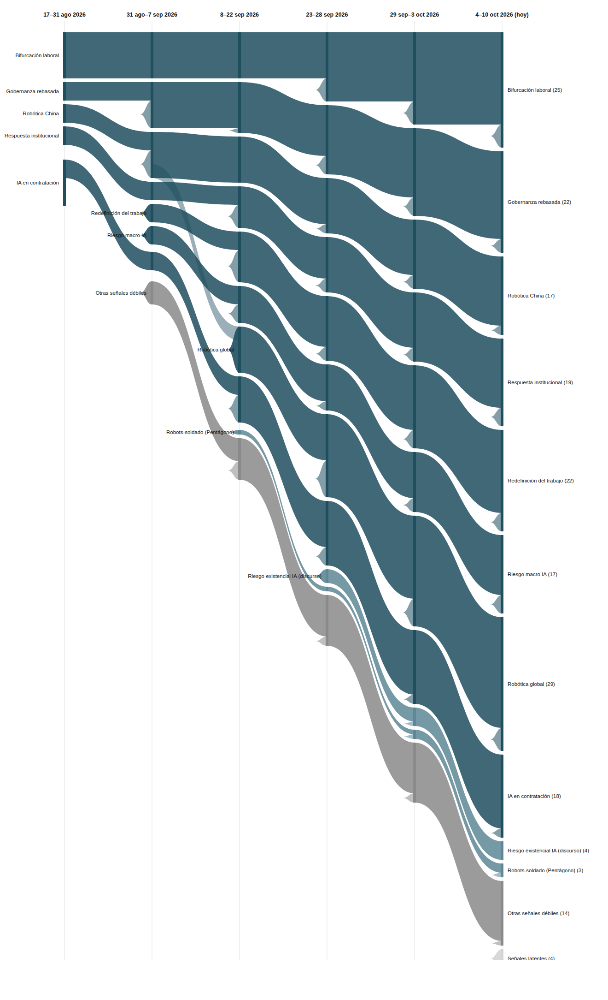

|
Vigilancia Tecnológica Competitiva
Señales del cambio
Semana 6 · 12 de octubre de 2026
Por primera vez el registro marca señales como latentes (cuatro a la vez), mientras uno de los optimistas más citados sobre la IA en el trabajo se alinea con el economista que más ha advertido sobre su ritmo de disrupción.
|
Resumen ejecutivo
173 observaciones nuevas procesadas entre el 4 y el 10 de octubre (la base histórica no registró observaciones adicionales en el periodo). Por volumen, esta edición prioriza ~35 observaciones de mayor relevancia estratégica. El registro de señales pasa de 21 a 23: 8 fuertes (sin cambios de estado esta semana), 8 débiles con potencial de escalar, 3 débiles y, por primera vez, 4 señales en estado latente (OpenExecutive, la plataforma pública china de IA encarnada, el centro NSF de coadaptación y la predicción de Musk), tras cuatro ediciones consecutivas sin evidencia nueva.
Los tres movimientos más relevantes de la semana:
- Mustafa Suleyman (Microsoft AI), que meses atrás predijo que la IA automatizaría la mayoría del trabajo de oficina en 18 meses, ahora coincide con el economista Nobel Daron Acemoglu en que no ocurrirá "pronto" — mientras Goldman Sachs advierte que la IA "borrará la gerencia media" y HubSpot recorta 660 empleos citando explícitamente su reestructuración hacia IA.
- Por primera vez desde que existe el registro estructurado, cuatro señales débiles pasan a estado latente a la vez tras cuatro ediciones sin evidencia nueva, mientras una quinta (impuesto sobre la IA) se salva en el último momento y escala a Débil↑.
- Nacen dos señales débiles: un nuevo oficio de entrenadores humanos de robots físicos (con su propia precariedad incorporada) y la "IA performativa" — empleados que exageran su uso de IA ante sus jefes.
|
|
Principales insights
3. Primera vez que el registro marca señales como latentes — y lo hace con cuatro a la vez.
OpenExecutive, la AI Tax and Work Protection Act, el centro NSF de coadaptación humano-robot y la predicción de Musk sobre el gasto anual en IA llevan cuatro ediciones consecutivas sin evidencia nueva desde su aparición el 7 de septiembre, y pasan a estado latente según el umbral metodológico fijado desde el inicio. En el último momento, una quinta señal del mismo lote —el debate sobre si la IA debería pagar impuestos— se salva al "ganar tracción" según El País y escala a Débil↑.
Implicación: la latencia no es muerte — estas cuatro señales pueden reactivarse si reaparece evidencia (quedan 4 ediciones más antes del umbral de "muerta"), pero el patrón confirma que no toda señal emergente madura en macro.
|
|
Señales de la semana
|
|
Gráfico de evolución
Flujo de las 8 señales macro y las dos señales débiles más notorias, a lo largo de seis periodos. El grosor de cada banda es proporcional al número de evidencias que la respaldan. Esta edición añade una banda específica para las señales en estado latente (gris claro), separada de las señales débiles activas (gris oscuro) y de las dos destacadas (azul claro).

|
|
Descripción textual del gráfico (por si no se renderiza la imagen): De izquierda a derecha, seis columnas temporales desde 17–31 ago 2026 hasta 4–10 oct 2026 (hoy). Las ocho señales macro llegan a la última columna con anchos claramente distintos: Robótica global es la más gruesa (29 evidencias), seguida de Bifurcación laboral (25), Gobernanza rebasada y Redefinición del trabajo (22 cada una), IA en contratación (18), Respuesta institucional (19), y Robótica China y Riesgo macro IA empatadas como las más finas (17 cada una). De las señales débiles, se muestran como bandas propias las dos con más evidencia: escalada del discurso de riesgo existencial de la IA (4) y robots-soldado con financiación privada/Pentágono (3, su tercera evidencia consecutiva). Por primera vez aparece una banda separada y en gris más claro para las señales latentes (4: OpenExecutive, AI Tax Act, centro NSF de coadaptación y predicción de Musk), distinta de la banda gris oscura de señales débiles activas (6). Ninguna señal ha llegado todavía a estado "muerta".
|
|
Señales a tener en cuenta
- Nuevo oficio: entrenadores humanos de robots físicos. Nueva esta semana, ya Débil↑ por tres fuentes independientes (Instawork, Agile Robots, The Globe and Mail). La escalaría: datos sobre volumen/salarios de este trabajo; marcos regulatorios específicos para la generación de datos de entrenamiento robótico.
- "IA performativa": empleados fingen usarla para complacer a jefes. Nueva esta semana, aunque ya había aparecido como observación aislada hace tres ediciones. La escalaría: encuestas cuantitativas sobre su prevalencia.
- AI Tax and Work Protection Act. Se salva del umbral de latencia en el último momento y escala a Débil↑: el debate sobre si la IA/los robots deberían pagar impuestos "gana tracción" en EE.UU.
- Robots-soldado con financiación privada/Pentágono. Tercera evidencia consecutiva en tres ediciones: el Ejército de EE.UU. crea una nueva especialidad militar de robótica en operaciones especiales. Empieza a acumular suficiente recurrencia institucional como para vigilar si escala más allá de "débil".
- OpenAI Jobs Platform y el "impuesto del discernimiento". Llevan ya tres ediciones sin evidencia nueva propia — a una edición del umbral de señal latente si no reaparecen la próxima semana.
|
|
Movimientos del histórico
Nacieron: nuevo oficio de entrenadores humanos de robots físicos, y "IA performativa" (empleados que exageran su uso de IA ante sus jefes).
Escalaron: AI Tax and Work Protection Act pasa de Débil a Débil↑, salvándose del umbral de latencia en la misma edición en que lo cruzaba.
Latentes esta semana — primera vez que el registro usa este estado: OpenExecutive, la plataforma pública china de IA encarnada, el centro NSF de coadaptación humano-robot y la predicción de Musk sobre el gasto anual en IA, tras cuatro ediciones consecutivas sin evidencia nueva. Ninguna señal ha llegado todavía al umbral de "muerta" (8 ediciones).
|
|
Cierre
Pregunta abierta: esta semana, uno de los ejecutivos más citados por predecir que la IA automatizaría el trabajo de oficina en 18 meses se retractó del plazo, mientras Goldman Sachs señalaba a la gerencia media como la capa más expuesta al cambio. Si ocupas o gestionas un puesto de mando intermedio: ¿qué tan preparado estás para que tu rol cambie de forma sustancial antes de lo que cualquiera predijo hace solo unos meses, y sabes ya qué parte de tu trabajo sería la primera en recomponerse?
Metodología: cada señal es trazable a observaciones concretas en la base de vigilancia. Una señal pasa a "latente" tras 4 ediciones sin evidencia nueva, y a "muerta" tras 8; esta es la primera edición en la que alguna señal cruza el primer umbral.
|
|